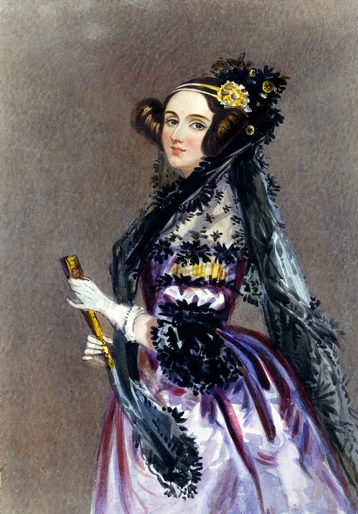
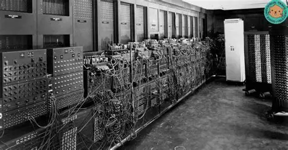

Registro de arquitectura y canales de divulgaciones
| GENERACIÓN/ORDINADOR | AÑO INICIO | AÑO FINAL | |
|---|---|---|---|
| GENERACIÓN (VALVULAS) | ENIAC | 1943 | 1946 |
| EDVAC | 1946 | 1949 | UNIVAC | 1951 | 1954 |
| IBM 701 | 1952 | 1957 | |
| Z3 (Konrad Zuse) | 1941 | 1944 | |
| Colossus | 1943 | 1945 | |
| IBM System/360(Circuito Integrado) | 1964 | 1978 | |
| Altair 8800(Microprocessador) | 1974 | 1976 | |
| Apple II (Ordenador Personal) | 1977 | 1993 | |
| Nombre | ¿Tengo cuenta? | VAloración | Dirección |
|---|---|---|---|
facebook 
| 2.5/5 | http:/www.facebook.com | |
Flickr 
| 4.25/5 | http:/www.flicker.com | |
|
Vimeo |
Sin valor todavia | http:/www.vimeo.com | |
|
Youtube | 2.75/5 | http:/www.youtube |
Galeria de imàgenes y documentales audiovisuales
Ada lovelace !

l'ENIAC

sonido tecnològico (reproducción en bucle)
Documento educativo incrustado (Inframe Youtube)
bloque de códigos y atributos globales
Terminal alternativa de apuntes
//haz un clique aqui para escibir tus liñeas de código o notas
panel de control de la CPU(con datos ocultos):
estos son datos ocultos.
registro principal: ejecutando instancias en memoria RAM.
Passa el ratolín encima de este bloque para ver el tooltip informativo
panel de control de la CPU(con datos ocultos):
estos son datos ocultos.
registro principal: ejecutando instancias en memoria RAM.
Passa el ratolín encima de este bloque para ver el tooltip informativo